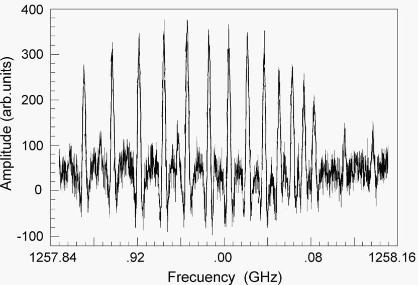

Instruments Multipliers
for SubMM range sources Example
of the multipliers use Multipliers
for SubMM range sources Example
of the multipliers use
The multiplier with 260-380 GHz range BWO (RAD gas
cell filled with SO2)
|
Rotational lines of SO2 molecule observed using RAD
gas cell at 2-nd, 3-rd and 5-th harmonics of frequency stabilized
BWO radiation. Frequency of the BWO fundamental radiation in MHz
is shown
on the scale.
(See Ref. 3 and 4 (1995) for
more details). Intensity of molecular lines observed at harmonics
or power of the harmonics essentially depends on Schtottky diode
bias. Different harmonics require different bias for optimal generation.
 |
The plot presents experimental record of ground state RQ4-branch of H2S2 molecule
at 1258 GHz observed in 4-th harmonic of the 260-380 GHz BWO radiation.
|